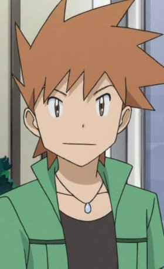

|  |
Blue |
|
Blue is the rival of Red and the champion of Kanto. He acts quite cocky but can be temperament. He prefers to go to things his own way and thus fights alone. Blue has been a dtermined albeit sometimes cold friend to many of the other Dexholders. He is Pofessor Oak's grandson. |
| |
Cheren |
- Pokemon Black and White: Adventure in Unova
|
Cheren is the Gym Leader of Asperita City who is the new Gym Leader as well. He is very knowledgeable about Pokemon and the Trainer's School teacher. If a Pokemon is scary, he will calm it no matter what. |
 |
Dan Moroboshi |
|
Dan Moroboshi is a member of the new SSSP(Scientific Special Search-Party). Moroboshi is an agent who directly to the organization's leader. He is a cynical man who has a blunt and strict senior towards young ones. He shows no hesitation when killing a monster. |
 |
Kazuya Kujou |
|
Kazuya Kujou is the youngest son of a soldier. He went to studied abroad in Sauville at Saint Marguerite Academy. He is described as a good and sincere person whose soul is pure enough to admit pride. He does have a blunt side when he is annoyed. He takes the honor of being an Imperial soldier's son to heart. He possesses an imperfect memory, remembering details that are helpful but unable to remember outside information. |
 |
Souei |
- That Time I Got Reincarnated as a Slime
|
Souei is Rimuru's faithful shadow and leader of the Shadow Squad of Tempest's Department of Intelligence. He takes his position a bit too seriously. He ruthlessly does not interpose personal feelings. Like a ninja, he radiates composure and undemished strength. |